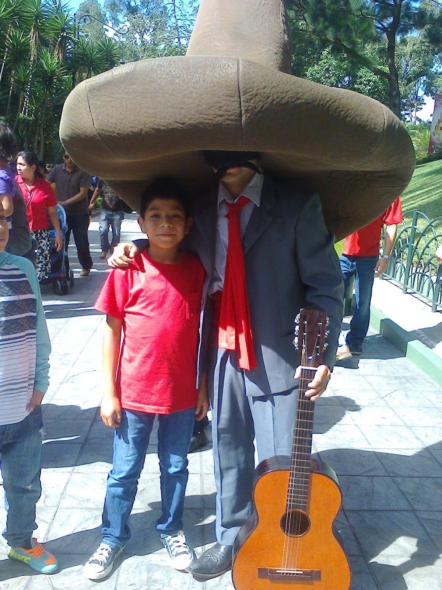
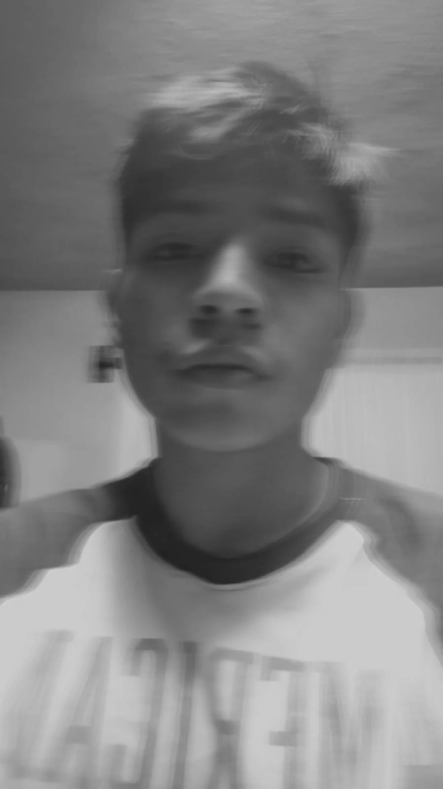
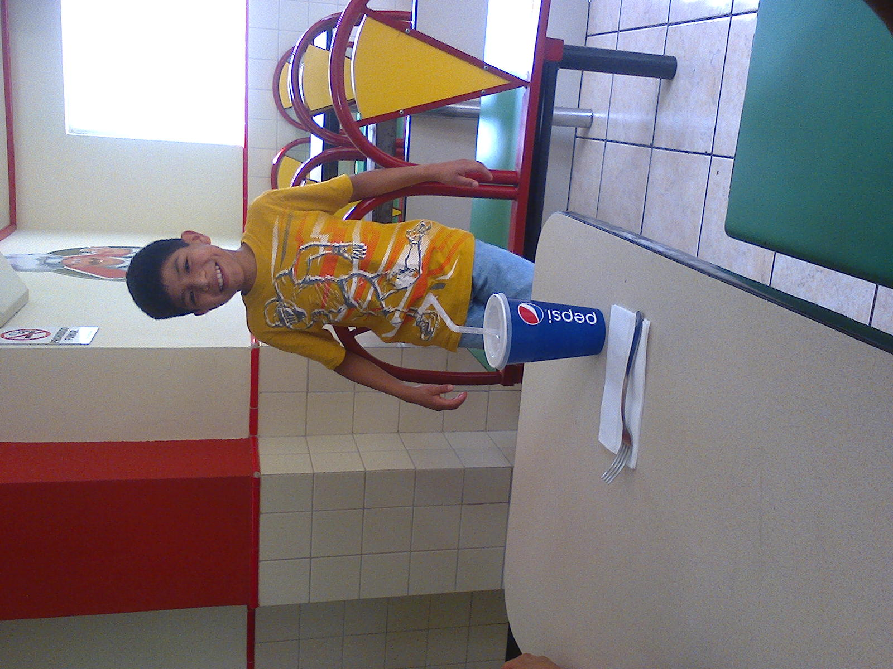

   Previous Next Este soy yo: Nací el 20 de noviembre de 2004, mis padres son, Oscar Hernández y Marina Bautista, tengo una hermana mayor, que se llama Odalys, tiene 3 años mas que mi persona estudie mi primaria en la Escuela Nacional Urbana Mixta joranada matutina, hasta quinto grado. Me trasladaron a la Escuela el calvario, donde vivi unos de los mejores años de mi vida. Termine la primaria y llegue a básicos, estos los lleve en el Instituto Nacional de Educación Basica. Donde me diverti mucho, ahí aprendí a jugar futbol, llegue a estar en la selección de sacatépequez, lamentablemente perdi toda mi vida social, gracias a la pandemia. Me costo adaptarme, empece a caer el malos habitos, perdiendo gran parte de mi persona. llego el 2021, tengo el honor de estar estudiando en kinal, pero el primer año fue muy dificil para mi no estaba acotumbrado a la presion, pero mi madre me ha criado con valores, y no tarde mucho en ponerme en corriente (Por las malas Jajaja), acutualmente curso mi ultimo año en este bello establecimiento espero poder graduarme sin ninguna roja y tener calificaciones buenas. Saludoos!!! Habilidades -Soy muy carismatico. -Me encanta ayudar. -Tengo la capacidad de hacer muchas cosas al mismo tiempo. -Le bastante rápido. -Me adapto rápido. -Me gusta hacer el sacrificio de esforsarme. Mis metas Tengo muchas metas para este año, y tengo muchas ganas de cumplirlas, una de ellas es superarme en los estudios, y llegar a tener un buen trabajo. Quiero ser un buen hijo, ayudar a mis padres, me has enseñado mucho y quiero devolver algo a cambio. Tambien quiero mejorar mi salud, tengo problemas de salud, actuamente estoy en tratamiento, y tengo una dieta, bastante estricta, quiero ir al gym y verme mejor, soy muy flaco y no me gusta mucho que digamos, esas son mis metas principales para este año.